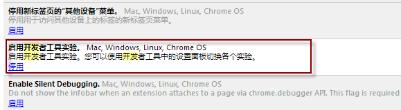
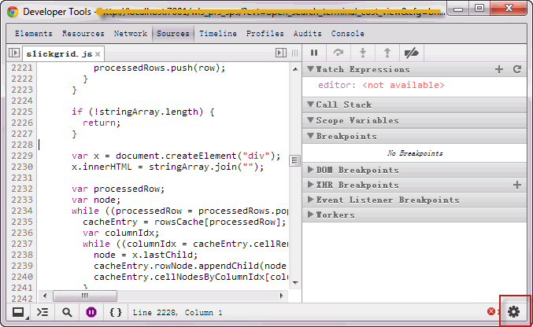
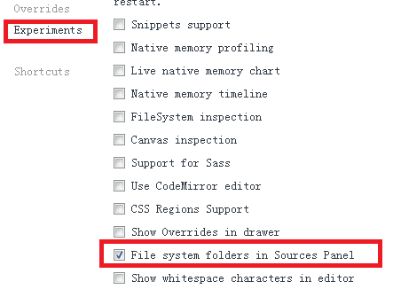
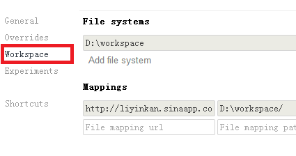
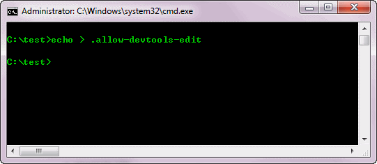
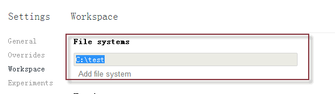
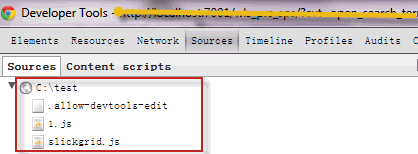
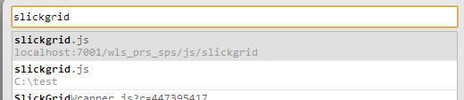
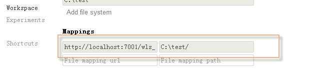

Chrome Workspace和File Mapping的使用方法
Tue, Mar 5, 2013前几天微博上一直在转Chrome browser引进了workspace的功能，可以在developer tools里直接进行源码编辑。
但是迄今为止搜索到的文档都没有详细描述使用步骤和限制，36kr上的这篇guide也没有关于mapping的描述，更没有一些坑描述。
翻看了Chromium的源代码，将使用步骤和在Windows下的坑描述一下。(截止20130305，这个步骤还是很新的)。
浏览器版本
如果是Chrome(谷歌浏览器)，只有开发者分支上有这个功能，地址在此
如果是Canary或者Chromium，都有这个功能。
使用步骤
- 开启”开发者工具实验”(这翻译真心烂…): 在browser输入chrome://flags/，启用”开发者工具实验”

重启chrome
打开要调试的site，进入Developer tools的setting 
启用Workspace功能 (Developer tools -> setting -> Experiments -> File system folders in Sources Panel) 
重启Developer Tools, 可以看到Settings里Workspace页 
假设源js的目录为c:\test, 需要现在这个目录下创建空文件.allow-devtools-edit, browser才会认可这个为源文件夹 
在Developer tool -> setting ->Workspace -> File system里，添加源js的目录 
重启Developer Tools, 可以在Sources页里看到本地folder 
此时在Chrome用Ctrl + O打开文件列表，可以看到两个相同的文件，一个是远端，一个是本地。在本地文件上打断点没有作用 
在Developer tool -> setting ->Workspace -> Mappings里，添加mapping：
http://localhost:7001/.../js/slickgrid C:\test
URL是以http开头的完整路径，url和path都万万不要以/结尾，虽然添加后会自动显示为以/结尾。千万注意大小写会坑爹，要保持mapping和folder的大小写一致 
- 此时，用Ctrl + O打开文件列表，只能看到一个文件，在本地文件上可以打断点(此处有坑，请阅读坑部分)，对本地文件的修改也会灵验的(直接反应在C:\test中)。
坑
- 千万别在mapping的路径后加’/‘（保存时会自动加上去），否则可能mapping不上。
- 大小写会坑爹，千万保持mapping和folder的大小写一致。
- 如果你的远端文件路径带参数，比如
http://xxx/js/1.js?d=1，断点不会触发。已经报了个bug
应该说workspace是挺有用的功能，不过由于坑3，在项目中的运用不畅。本想自己修修，发现这个bug涉及c++代码，表示放弃。